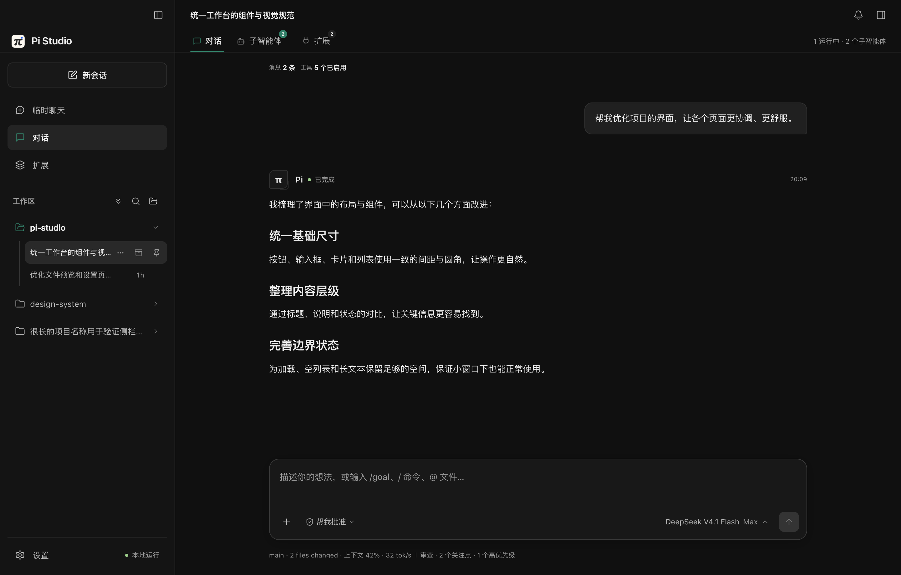
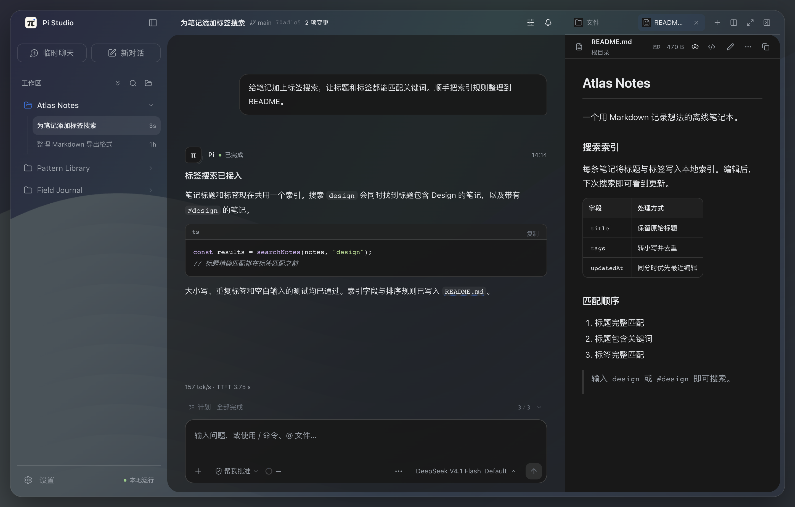
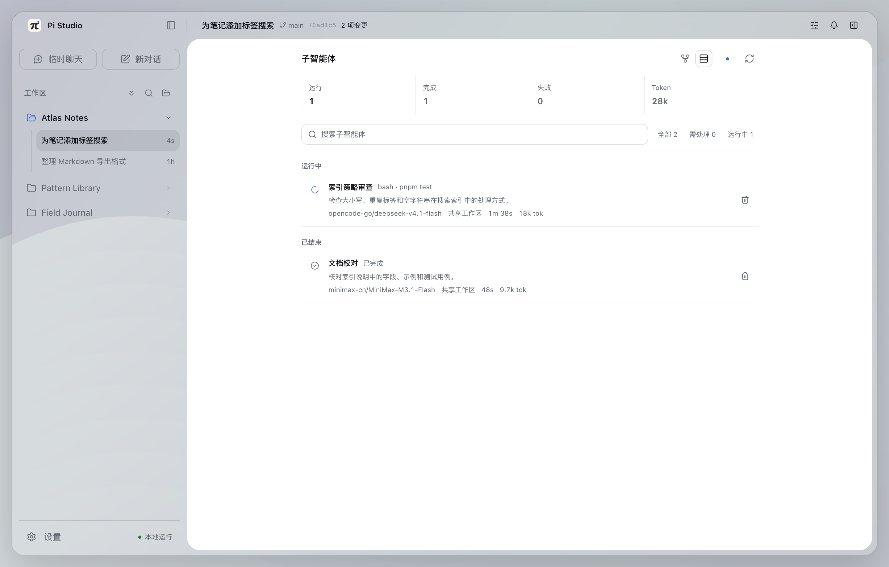
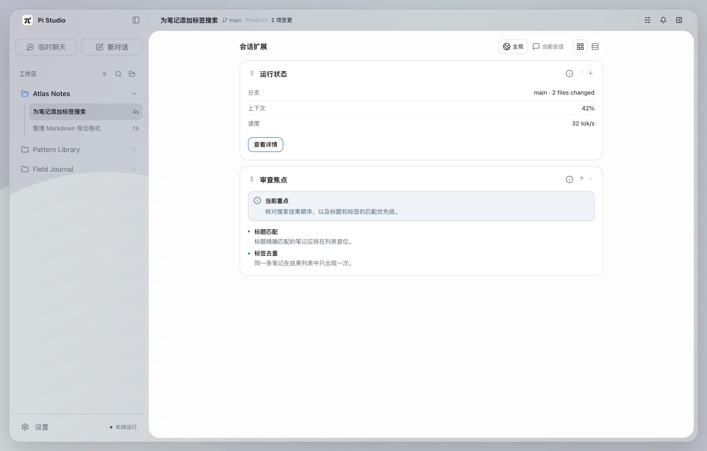

macOS 桌面 Agent 工作台
把 Agent 带进你的项目。
打开本地文件夹，与 Agent 一起写代码、检查改动，再到终端里验证结果。

跟着一次开发任务，看工作台如何组织文件、协作和工具。
在右侧工作台打开项目文件，一边读预览，一边和 Agent 讨论实现。需要验证时，直接在当前工作区打开终端。

将调查、实现或复核交给子智能体。在会话中查看各自的进度和结果，再回到主任务继续下一步。

在会话里查看扩展提供的运行状态、Git 分支和上下文用量。打开对应面板，就能读到指标背后的详情。

为 Apple Silicon 或 Intel Mac 选择安装包，添加自己的模型提供方，然后打开项目文件夹。